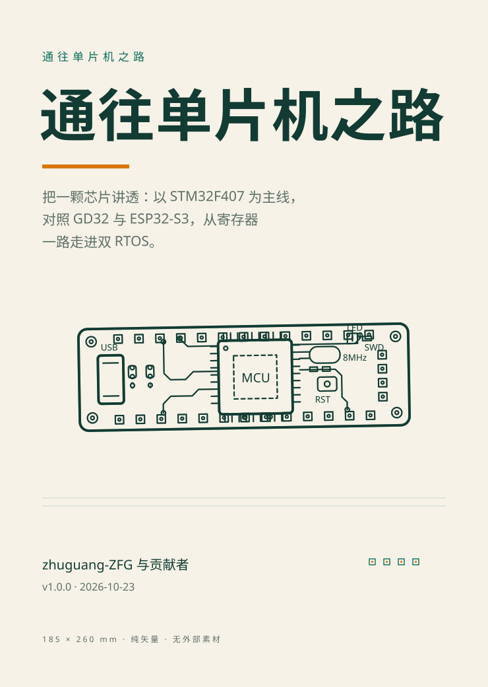
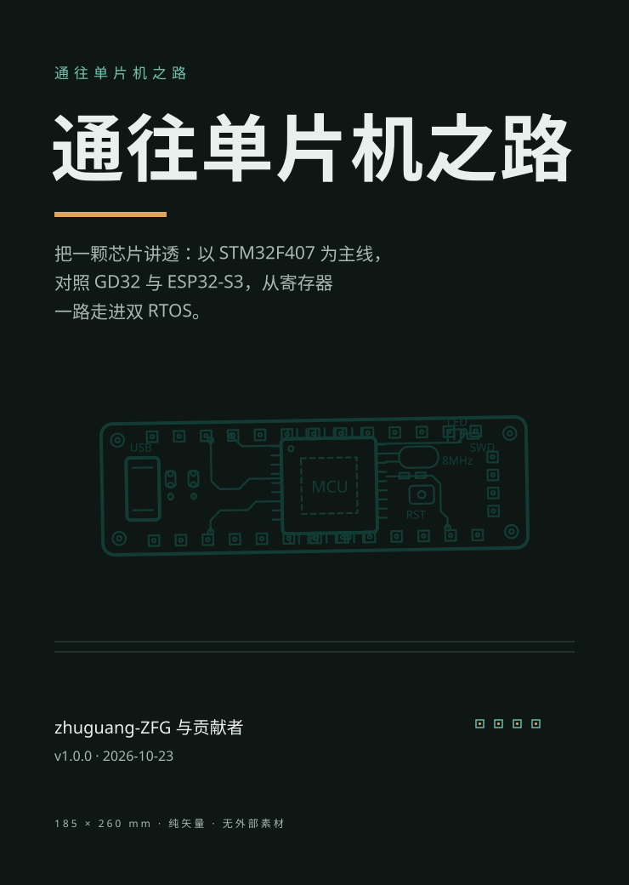
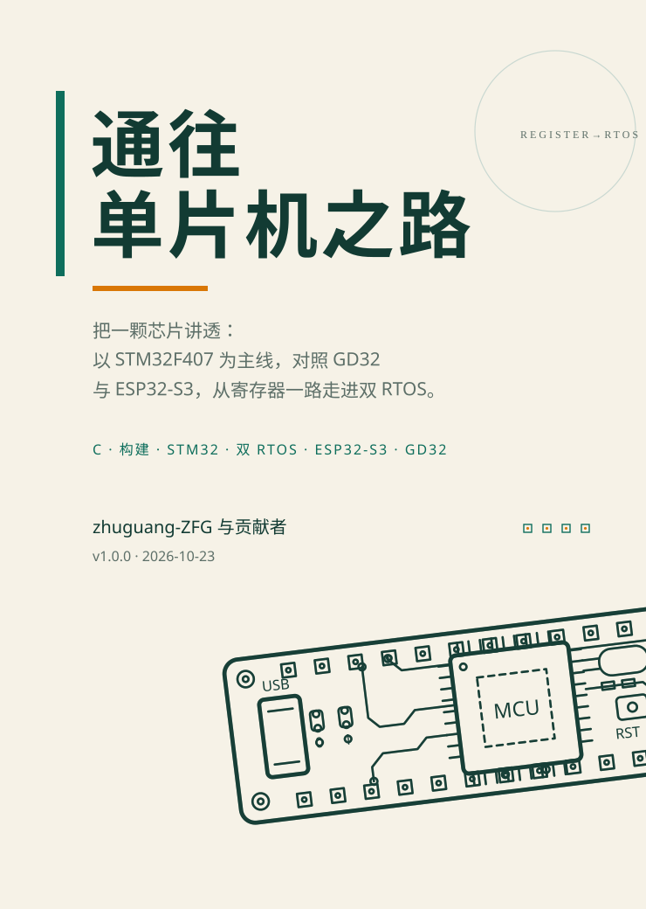
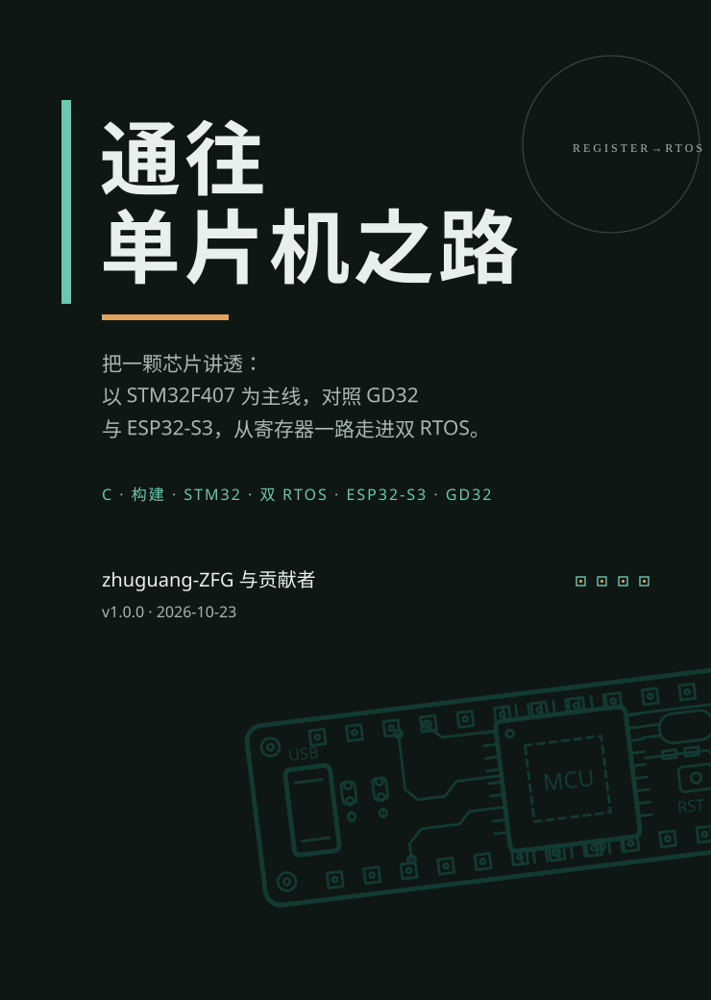

均为 185×260 mm 比例（740×1040 viewBox）、纯矢量、无外部素材，复用 mcu-book/print/art.py 的开发板线稿。 本目录不接生产构建；用户选定构图与配色后，才进入 build_html.py / build_print.py 的封面接入评审。
mcu-book/print/art.py
build_html.py
build_print.py



